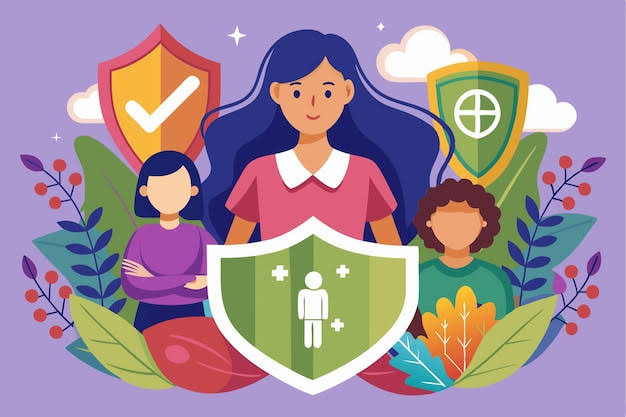

Women's Legal Rights & Protections
Understanding your legal rights is one of the most effective ways to protect yourself and others. The law provides clear protections, confidentiality safeguards, and free legal support.
1. Fundamental Safety Rights

Every woman is entitled to dignity, security, and equal protection under the law. Knowing these essential legal rights ensures you can handle difficult situations with clarity:
- Right to Confidentiality: Victims of harassment, sexual offenses, or abuse have the legal right to privacy. Their identity cannot be disclosed publicly or by media.
- Right to Statement in Privacy: A woman complainant has the right to record her statement privately in the presence of a female police officer or a magistrate.
- Right to Free Legal Aid: Every woman, irrespective of her financial background, is eligible for free legal representation under the Legal Services Authorities Act.
- Arrest Safeguards: Women cannot be arrested after sunset and before sunrise, except in extraordinary cases with prior judicial permission and in the presence of a woman police officer.
2. Key Protection Laws
Special statutes and provisions exist to prevent harassment, ensure workplace dignity, and defend against domestic abuse:
- POSH Act (Workplace Protection): The Prevention of Sexual Harassment Act mandates that every employer with 10 or more staff must have an Internal Complaints Committee (ICC) to address grievances securely.
- Domestic Violence Act (PWDVA 2005): Offers comprehensive protection against physical, emotional, economic, and verbal abuse, granting rights to residence and protection orders.
- Protection Against Stalking & Voyeurism: Physical stalking, cyberstalking, or recording/sharing pictures without consent are recognized criminal offenses under the law.
- Maternity Benefit Act: Protects employment and provides paid leave and healthcare benefits during and following pregnancy.
3. What is a Zero FIR?
A Zero FIR allows any victim to file an FIR at any police station, regardless of whether the crime took place inside that station's territorial jurisdiction.
- No Rejection: A police station cannot refuse to register an FIR by citing lack of jurisdiction. Doing so is an offense under the law.
- Instant Action: The police must immediately record the complaint, assign it a Zero number, initiate initial investigation, and transfer it to the competent jurisdiction.
- Free Copy: You are legally entitled to receive a free physical copy of the FIR upon filing.
- Online / e-FIR: In many states, complaints of non-violent or cyber offenses can be initiated directly via the state police citizen web portal.
4. Cyber Protection & Online Rights
With increasing digital activities, protections under the Information Technology Act ensure that online spaces remain respectful and safe for women:
- Image & Video Misuse: Capturing, publishing, or sharing non-consensual private media or deepfakes is strictly punishable under Sections 66E and 67 of the IT Act.
- Trolling & Threatening: Sending offensive, threatening, or stalking messages through WhatsApp, Instagram, email, or any social media is legally actionable.
- Report Online Anonymously: You can submit complaints related to online harassment directly on the National Cyber Crime Portal (cybercrime.gov.in).
Important Legal & Assistance Numbers
15100
NALSA Free Legal Aid Helpline
7827170170
NCW 24/7 Women Helpline
1930
National Cyber Crime Reporting
Legal Assistance Is Always Within Reach
If you or someone you know needs legal counseling or representation, official free services are available across the country. Reach out to verified authorities:
National Legal Services Authority (NALSA) → • National Commission for Women (NCW) →